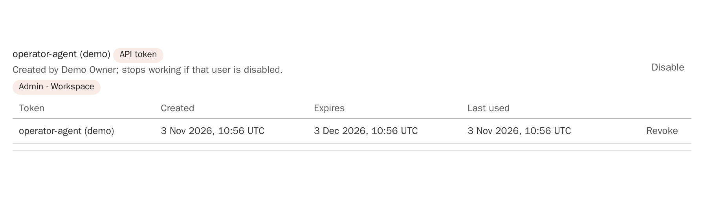
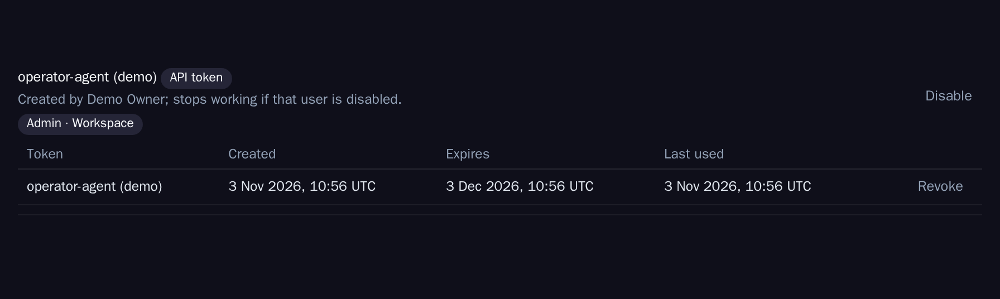
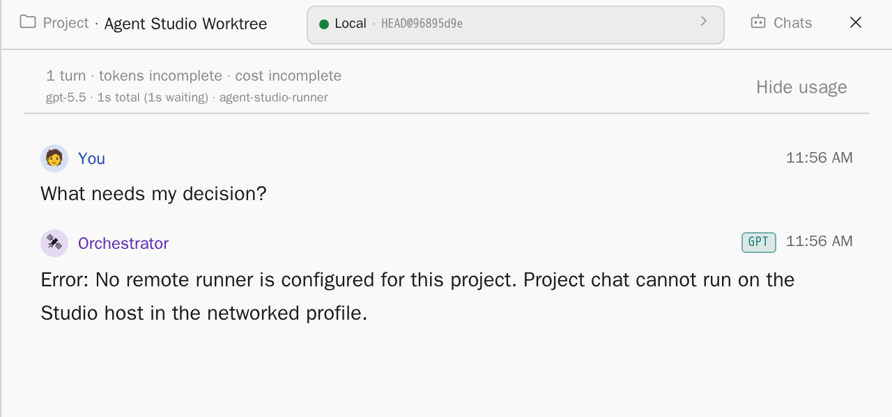
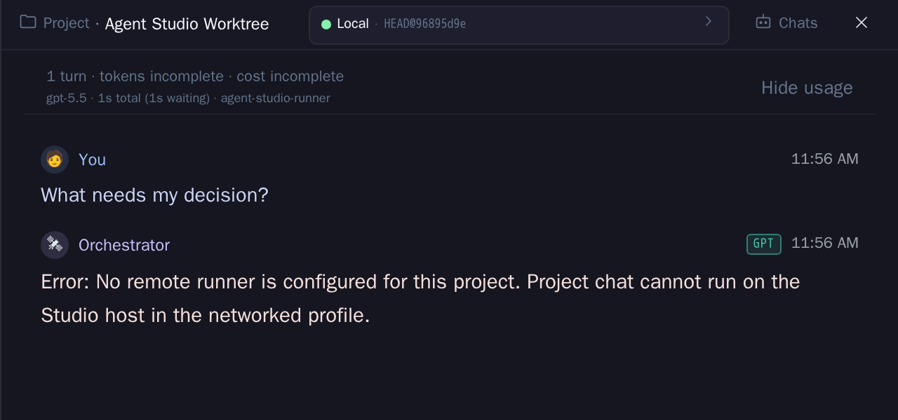

Agent Studio is already operated by a Claude Code session on the owner's laptop, working through the HTTP API and SSH runbooks. This Dossier makes that level part of the product. Coding-agent CLIs operate the installation, the in-app chat is the owner's conversation inside the tool, and both work on the same cards, records and limits.
Status Decision pendingPhase Decision readySource AGT-3462Related AGT-3186, AGT-3353, AGT-3379, AGT-3459Scope Roles, operator surface, guardrails, shared context, model and quota, implementation cut, website outline
Scope
On 3 November 2026 the owner asked for coding-agent CLIs to become an explicit part of the product concept. Today a Claude Code session on the owner's laptop watches the board, triages batch gates, sends follow-up rounds, accepts cards, changes model routing and runs deploys. It does this through the Studio HTTP API and SSH runbooks. This Dossier sets out four things:
the roles and their identities;
the API surface an operator agent needs, and how it should ship;
the guardrails, as product rules;
how the operator agent and the in-app chat share context without acting on the same card at the same time.
It ends with an implementation cut and an outline for the website page. The website page itself is a separate card.
Terms used throughout:
Owner: the person who holds the installation's Owner role.
Operator agent: an interactive coding-agent CLI session, Claude Code or Codex, that the owner runs on their own machine to operate Studio. The security model (AGT-3353) uses the same term.
In-app chat: the orchestrator chat in Studio's side sheet. Its context is the global workspace, a project or a task.
AI Operator: the in-product watcher that proposes or applies stall interventions. It is part of Studio and keeps its own actor name.
This card changes no product code. It builds on the security model and does not repeat it: identity, tiers, standing grants, approval with step-up, the audit chain and the kill switch are taken as decided there (SM-1 to SM-13). The repository is public, so the Dossier names no host, address or account.
Current state
Identity. Since 3 November the operator session authenticates with an API token from AGT-3186.
Only the owner creates tokens, with POST /api/auth/api-tokens. A token has the role operator or viewer, a project list or *, and an expiry of at most 365 days.
The secret is shown once, and only its hash is stored. Every bearer request is written to an audit file, refused requests included.
A token cannot call /api/auth/*, /api/v1/*, Runner service routes or SignalR. It cannot write installation-wide settings, even with *.
An operator token is stored as a service account with an Admin binding. For a * token that binding covers the workspace (evidence).
Handlers and card timelines see it as service-account:<id>. A lane move made with it does not count as an operator requeue or an operator lane verdict.
The second factor for owner and operator logins (AGT-3379) ends password-only scripts, so the token is now the only scripted path.
Working set. Between 1 and 3 November 2026 the operator worked from scripts kept outside the repository:
a board watcher that exits when a decision is needed;
batch gate state, pending pushes and eject;
continue rounds that name the card's full result ref;
lane moves and acceptance;
switching the review step models of all projects;
quota reading, creating cards in Ready, and title repair.
The runbooks cover four procedures: a deploy with the server first and the hosts in the same window, base-verdict quarantine, a stuck batch flight, and a lost pending push.
Repository support. The repository has one portable skill for this work, task-api. It covers create, move, triage and reorder. Its reference scripts read the token from the environment variable AGENT_STUDIO_API_TOKEN, which breaks the rule that tokens live only in files; OP-1 removes that path. No MCP server and no operator CLI exist.
Events. Board events are pushed over the SignalR hub /hubs/jobs, but API tokens are refused there. Every decision-oriented surface can only be polled:
GET /api/runner/{project}/pending-decisions
GET /api/projects/{project}/review-decisions-pending
the watcher routes
the escalated lane
In-app chat. The chat runs as a one-shot CLI turn. In the networked profile it refuses to run on the Studio host and needs a Runner that holds a CLI login. In a fresh networked installation without a Runner, the first question is answered with an error (evidence). The Studio host's spawn guard allows only an isolated Claude one-shot and refuses Codex.
Security model. None of SM-1 to SM-13 that concern the operator agent exist in code yet: there is no operator-agent principal, standing grant or kill switch. The second factor and step-up (SM-8, AGT-3379) have landed. The Operations Server has an early catalogue with two host operations.
Roles
Studio has four acting levels and one person above them. Each level has one identity, one scope and one record. The levels complement each other:
the in-app chat is where the owner thinks aloud inside the tool;
the operator agent is where routine operation and multi-step runbooks run;
runners and review hosts do the card work.
Operating levels in the target model. The operator agent reaches Studio only through the operator surface, and every request passes the same policy and audit step. The in-app chat and the operator agent meet in the shared context, not in each other's sessions. Proposed design; nothing in this figure is a screenshot.
Role
May do
Identity
Scope and expiry
Record
Owner
Everything. Alone holds the items in the list below.
Human account with password and second factor (AGT-3379).
Installation. Browser session, step-up for sensitive actions.
Actor human:<id> in timelines and IAM audit.
In-app chat
Read board, cards, runs, quota and Dossiers through the context envelope; answer and propose. Typed write actions (ORCH-2 "Hands") stay future work and then run under the owner's session with the owner present.
The owner's browser session. The turn itself runs on a Runner with that Runner's CLI login.
The context key (global, project:, task:).
Transcript and source receipt on the Task Server; actions, when they exist, as human:<owner> via chat.
Operator agent
T0 observe always. T1 routine operations under a standing grant: watch, triage batch gates, eject, continue rounds, lane moves, acceptance with green evidence, create cards in Ready, title repair, review step model changes through central model selection, deploy a gate-verified commit with the server-first plan. T2 only with owner approval.
Now: an operator API token. Target: the operator-agent principal with sessions (SM-1).
Now: projects or *, at most 365 days; recommended 30. Target: session token of at most 8 hours, renewed only by the owner.
Now: service-account:<id> plus the bearer audit file. Target: operator-agent:<id>/session:<sid>, delegatedBy: human:<owner>, hash-chained audit.
Runners
Claim leased cards, run coding agents, run in-app chat turns, report results. No operator routes.
Enrolled runner credential.
Runner scopes and leases.
Run records, session events, platform-owned commits.
Review hosts
Run review steps and gates on assigned material. No lane authority beyond their verdict.
Runner credential of the review host.
The review lease.
Review verdicts with citations, run records.
What stays with the owner
Credentials. CLI logins and subscriptions, provider keys, GitHub App setup, SSH keys and secret values. The operator agent never sees a secret value and never runs a provider login on a host.
Consent clicks. Device-code and OAuth approvals, provider terms, anything a provider requires a human to click.
Installation-wide settings. Access, roles, tokens, grants, the operation catalogue, retention and installation settings. Tokens are already refused here; the rule stays when the operator principal arrives.
The second factor. Step-up, approvals for T2 requests, opening break-glass, and the kill switch.
Product decisions. Decision cards, Dossier acceptance, and acceptance of cards whose evidence is not green.
Operator surface
The operator agent needs fourteen kinds of operation, all derived from the working set. For each, the table names the route that exists today and what is missing.
Need
Today
Missing
Wake when a decision is needed
Poll /api/tasks/grouped, /api/runner/{project}/pending-decisions, /api/projects/{project}/review-decisions-pending, /api/watcher/*. The SignalR hub refuses tokens.
A decision stream that a token may read, with typed events and a resume cursor.
Know the watcher is alone
Nothing.
A watcher lease per installation, held by one session.
Batch gate state, pending pushes, eject
GET /api/projects/{p}/batch-gate/state, /report, /queue-stalls, POST .../members/{key}/eject, .../close-now, per project.
A cross-project triage view: every flight, member state, red or isolating members, pending pushes with age, and the next safe action.
Continue round
POST /api/tasks/{id}/continue with prompt, mode and model. It carries no result ref; a new run starts from develop unless the prompt names the ref.
Continue that resolves the card's latest result ref itself and records it on the run.
Lane moves and acceptance
POST /api/tasks/{id}/move, /api/tasks/batch-move; acceptance is a move to 6-completed.
An accept operation that checks evidence and records the operator actor and grant, distinct from a plain move.
Create cards in Ready, repair titles
POST /api/tasks/, PUT /api/tasks/{id}/title.
Nothing beyond the actor record.
Review step models of all projects
PUT /api/projects/{p}/pipeline-step per project and step.
One change through central model selection (AGT-3459) instead of a loop over projects.
Quota and fallback
GET /api/cli/quota, /quota/model-routes, /api/quota/admission/{project}. Project-scoped principals see cached, redacted data.
One capacity view: quota per CLI, active fallbacks and their reason, cards waiting on quota, routing pins.
Deploy, server first
Deploy routes per project; installation update is an SSH runbook.
A deploy plan and preflight: order, version skew, pending pushes, running flights, then typed host operations.
Check before restart
Read batch state per project by hand.
The same preflight, refusing while a push is pending.
Write down why
Nothing shared; notes stay in the CLI session.
An operator log entry linked to cards, readable by the in-app chat.
Not collide with the chat
Nothing.
An attention lease per card and revision checks on writes.
Runbooks
Scripts and notes outside the repository.
Versioned runbooks that ship with the product.
Know what it may do
Implicit in the token role.
A readable self-description: identity, grants, expiry, refused routes.
Decision stream
The watcher should not poll the board and infer meaning. Studio already knows when a decision is needed. The decision stream publishes that knowledge as typed events, in two forms:
GET /api/operator/decisions?after=<cursor> returns a snapshot;
GET /api/operator/decisions/stream is a Server-Sent Events stream that a bearer token may read.
The event types are:
escalation.opened
human-review.ready
decision-card.opened
backend.stalled
progress.idle-with-ready
batch.red
batch.isolating
push.pending-overdue
quota.exhausted
quota.fallback-active
watcher.heartbeat
Each event names the project, the card, the reason, the suggested operations and the evidence links. The watcher becomes studio-op watch. It blocks until the first event that needs the operator, prints it, and exits with a code per class, the same contract as today's script.
Delivery
Four shapes were considered: documented REST alone, a small official CLI, an MCP server, and a skill or plugin for Claude Code and Codex (Alternatives). The recommendation is an official CLI, studio-op, over documented REST, shipped with one portable skill that teaches the runbooks and calls the CLI. An MCP server can wrap the same CLI later if a client needs it.
Guardrails
Each guardrail from the working set becomes a product rule. It is enforced where the agent cannot talk its way past it: in the server first, in the CLI second, and in the skill text last.
Rule
Server
CLI and skill
Tokens live only in files. The operator agent reads its token only from a file with owner-only permissions. Never from an environment variable or a command-line argument, and never in chat, prompts or logs.
Token secrets are never echoed after creation. The in-app chat, card prompts and operator log redact token-shaped values (api., sat.) before storing them, and the audit records only the token id.
studio-op reads the token only from a file with owner-only permissions (default under the user's config directory). It has no environment variable or command-line option for the token. It refuses a file readable by group or others, never prints the token, and redacts token-shaped values in all output. The skill forbids pasting tokens and points to studio-op auth status.
No Git as root in project data.
Platform-owned Git steps run as the service user. A health check flags root-owned files in project data and repositories as an acute signal.
The CLI has no Git commands. The skill states that repository repair is a card or a typed host operation, never a root shell in project data.
Deploys run server first. Hosts follow in the same window.
The deploy plan orders the Task Server, then the Engine, then the hosts. A host refuses a protocol version newer than its server. A plan expires when its window closes.
studio-op deploy plan shows the order. studio-op deploy run executes only an unexpired plan.
One watcher at a time.
The decision stream grants one watcher lease per installation. A second watcher receives 409 watcher-active with the holding session and its last heartbeat.
studio-op watch takes the lease and keeps a local lock file. --take-over is a T1 operation recorded in the operator log.
No rounds to members of a batch under isolation.
Continue, steer and requeue refuse a card whose batch is isolating, with 409 batch-isolation-active naming the flight.
Triage shows eject as the only member action during isolation.
Check pending pushes before a restart.
A restart or deploy preflight refuses while a pending push exists or a flight is publishing. Overriding is T2: owner approval with step-up.
studio-op preflight restart lists the blocking pushes. The skill's restart runbook starts with it.
Continue rounds carry the result ref.
Continue resolves and records the card's latest result ref as the run base.
The operator no longer types refs.
Shared context
The operator agent and the in-app chat never read each other's sessions. They meet in four shared records.
Card timeline. This is the single truth about what happened to a card. Every operator write appears with its actor, grant and reason. The in-app chat already reads it through the context envelope.
Operator log. This is a new append-only journal per project and installation, written by the operator agent: what it observed, decided and did, and why. Each entry links cards and audit ids. The in-app chat gets it as a context source (operator-log:<project>), so the owner can ask "what did the operator do overnight" inside Studio. The owner can also leave a handoff entry from the chat, which the operator agent reads at its next wake.
Dossiers. Dossiers stay the record of decisions. The operator agent reads them to learn the recommended option and never edits a decision section.
Attention lease. Before writing to a card, the actor that is working on it takes a short attention lease (default 10 minutes, renewable). The actor is the operator agent, or a chat action under the owner's session. The card shows who holds the lease.
Every write also carries the card revision it read (If-Match). A write against a stale revision is refused, so two actors cannot overwrite each other even without a lease.
The lease is advisory for the owner and binding for the operator agent:
An owner action always wins. It ends the operator's lease, and the operator log records that the owner took over.
The operator agent cannot take a lease held by the owner's chat.
Model and quota
Subscription. The operator agent runs on a subscription of its own, the owner's CLI login on the owner's machine. It is not part of the Runner pool. Its turns do not consume Runner quota, and Studio does not admit or route them.
Self-reported usage. The operator log may carry the operator agent's own usage as a self-reported figure, so the owner sees the cost of operation next to the cost of the work. Studio does not enforce that figure.
Reading quota. The operator agent reads Studio's quota and fallback state through the capacity view. It reads them in order to decide whether to wait, re-route or ask.
Model changes. Changing which models review steps use is not a loop over projects. It goes through central model selection (AGT-3459, a concept in progress), which owns the catalogue, tiers and per-step defaults. The operator agent requests a change there as a T1 operation under a grant that names the allowed tiers. A change outside those tiers is T2. The model routing policy keeps its correctness floors either way.
Alternatives
D1 · How the operator surface ships
A. Documented REST only
Publish an operator section of the API reference and leave clients to the agent.
Cheapest. Every session rebuilds the scripts that live outside the repository today, and the guardrails depend on each session's prompt. Token handling is left to the agent, which led to environment variables in the current skill.
B. Small official CLI over documented REST
studio-op, a single binary or Node script with commands for watch, triage, continue, accept, move, create, title, capacity, routing, preflight and deploy plan. It has stable exit codes and JSON output.
It works the same in Claude Code, Codex, other CLIs and a plain terminal. The token file, the redaction and the one-watcher lock live in code, not in prompt text. A blocking watch fits the way agent CLIs already run background commands. It is testable in CI and usable by the owner without an agent. It needs a release channel next to the product.
C. MCP server
Expose the operations as MCP tools to clients that speak MCP.
Typed tools and good discoverability. But it is a long-running process per client with its own configuration, where the token tends to end up in a client config file. Long blocking waits fit tools poorly. Runbooks still need prose. The Studio host's spawn guard already runs CLIs with MCP disabled, so it adds a surface the product deliberately keeps closed for agents it runs.
D. Skill or plugin only
A Claude Code skill or plugin plus a Codex equivalent that teaches the routes and runbooks.
Fast to write and close to how the operator works today. But it is prose: it cannot enforce a guardrail, a token file or a lock. It drifts per client format, and each client needs its own variant.
D2 · How a decision reaches the operator agent
A. Polling the board
What exists today: interval reads and inference in the watcher script.
The watcher re-derives rules Studio already holds. It misses short-lived states and costs a request per project per interval.
B. Server-Sent Events decision stream with snapshot and cursor
A typed event stream that tokens may read, plus a snapshot route for resume.
Plain HTTP that works through the edge and in a shell. It reuses existing decision facts, and the cursor makes a restart lossless.
C. Open SignalR to tokens
Allow bearer tokens on /hubs/jobs.
It streams every board change, not decisions, and the interpretation stays in the client. It also widens a surface the security overview closes on purpose.
D. Outbound webhooks
Studio calls a URL on the owner's side.
It needs an inbound listener on the owner's laptop and a callback secret. That is the wrong direction for a machine behind NAT.
D3 · How the in-app chat and the operator agent avoid colliding
A. Convention only
The skill tells the operator agent to check the timeline first.
Nothing stops a race.
B. Revision checks on every write
Writes carry the card revision they read, and stale writes are refused.
It prevents lost updates, but it does not stop two actors from starting the same work.
C. Attention lease plus revision checks
A short, visible, renewable lease per card, and revision checks on writes. The owner always wins.
It prevents duplicate work and lost updates, and it is visible on the card. The cost is a small lease store, which can reuse the existing fence and lease patterns.
D4 · Which identity the operator agent uses until SM-1
A. Keep the operator API token as it is
An Admin binding, up to 365 days.
This works today. But Admin includes secrets and production deploys in its description, and a long expiry outlives a laptop.
B. Narrow operator role, 30-day expiry, token file
A role that holds exactly the operator surface permissions, without secret writes, production approvals or access. The owner creates it with a 30-day expiry by default and stores it in a file.
This is a small change on the existing service-account model, and it maps directly onto the SM-1 principal later.
C. Wait for SM-1 sessions
No interim change.
This keeps the broad token in use until the security stages land.
Recommendation
Recommended default
Make coding-agent CLIs the operator level of the product, with six parts:
ship an official CLI, studio-op, over documented REST, with one portable skill for Claude Code and Codex that teaches the runbooks (D1 B);
wake the operator agent with a typed decision stream over Server-Sent Events, with a snapshot and a cursor (D2 B);
share context through the card timeline, a new operator log and Dossiers, and prevent collisions with an attention lease plus revision checks (D3 C);
replace the Admin-bound operator token now with a narrow operator role, a 30-day default expiry and a token file, and move to the SM-1 principal when it lands (D4 B);
keep credentials, consent clicks, installation-wide settings and the second factor with the owner;
run the operator agent on its own subscription and route model changes through central model selection (AGT-3459).
The main reason: the operator level already exists and works, but its rules live in a session's memory and in scripts outside the repository. A CLI puts the rules in code that every agent and the owner use the same way. The server then enforces what must never depend on the agent's wording.
The in-app chat stays the owner's conversation in Studio. It reads everything the operator agent records, and its write actions remain owner actions. In a networked installation it needs a Runner with a CLI login. Studio should say so in the chat before the first question, not answer the first question with an error.
Evidence
Evidence is classified as observed (read in the repository at commit d63df0be4, or captured from a fresh networked monolith built from it on 3 November 2026), inferred, or proposed. The captures use a disposable test installation with the Playwright fixture project, a demo owner and demo tokens. They contain no real project data and nothing from the security handoff.
Light

Operator token binds Admin
Dark

Evidence. An API token created with role operator for all projects appears in Settings > Access as a service account with the binding Admin · Workspace, a 30-day expiry, a last-use time and a Revoke action.Light: captured from a fresh networked monolith built from this task's worktree (commit d63df0be4) and started by the Playwright prebuilt stack in the networked-monolith profile. The demo owner bootstrapped, enrolled a second factor, stepped up and created the token through POST /api/auth/api-tokens. The token then made six bearer reads before the capture. Element crop of the service account entry, padded with the page background to keep the theme label and annotation clear of the content.Dark: captured , same stack, token and crop.
Light

First answer is an error
Dark

Evidence. In a networked installation without a Runner, the in-app chat accepts a question and answers it with "No remote runner is configured for this project. Project chat cannot run on the Studio host in the networked profile."Light: captured from the same fresh networked monolith (commit d63df0be4). The question was sent as the demo owner through POST /api/runner/{project}/orchestrator-chat, then the side sheet was opened from the board. The crop shows the header, usage line and transcript; the composer below is unchanged.Dark: captured , same stack, transcript and crop.
Options: REST only, official CLI, MCP server, skill or plugin only.
Recommended: official CLI studio-op over documented REST, plus one portable skill; MCP only as a later wrapper.
OA-D2 · Decision signal
Options: polling, SSE decision stream, SignalR for tokens, webhooks.
Recommended: SSE decision stream with a snapshot route and a cursor, readable by tokens, with one watcher lease.
OA-D3 · Collision control between the in-app chat and the operator agent
Options: convention, revision checks, attention lease plus revision checks.
Recommended: attention lease plus revision checks. The owner always wins.
OA-D4 · Interim operator identity
Options: keep the Admin-bound token, a narrow operator role with a 30-day default and a token file, or wait for SM-1.
Recommended: a narrow operator role now, mapped onto the SM-1 principal later.
OA-D5 · Operator acceptance of cards
Options: the operator agent never accepts; it accepts any card; it accepts only with green evidence under a standing grant.
Recommended: it accepts only with green evidence and no open decision, under a grant. The acceptance is recorded as the operator agent's verdict, not the owner's. Cards with red, missing or disputed evidence, and decision cards, stay with the owner.
OA-D6 · Where the operator log lives
Options: in the operator's local session; in Studio's existing orchestrator log; as a new append-only operator log on the Task Server.
Recommended: a new append-only log on the Task Server next to the chat transcripts, so the in-app chat and the archive read it.
Implementation cut
Ten cards, each reviewable on its own. Dependencies name card ids. The security model's slices SM-1, SM-2, SM-4 and SM-5 remain the identity, kill-switch, grant and approval work; these cards build on them where noted and do not duplicate them. Full prompts are in workbench.json.
Card
Delivers
Depends on
Acceptance (summary)
OP-1
Narrow operator role and token file convention
none
An operator token cannot write secrets, approve production or touch access (403 in tests). The default expiry is 30 days. The task-api scripts read the token only from a file with owner-only permissions, refuse a file readable by group or others, and no longer read an environment variable.
OP-2
Decision stream and watcher lease
none
Each listed event type is emitted in a test within 10 seconds of its fact. A resume by cursor loses no event. A second watcher gets 409.
OP-3
Continue with result ref and the isolation guard
none
A continue starts from the card's latest result ref without the prompt naming it. A continue to a member of an isolating batch returns 409.
OP-4
Cross-project batch triage view
none
One call lists all flights, member states and pending pushes with age, and matches the per-project state routes in a test.
OP-5
Capacity view: quota, fallbacks, waits
none
One call returns quota per CLI, active fallbacks with reason, and waiting cards, readable by an operator token.
OP-6
Deploy and restart preflight with a server-first plan
OP-4
Preflight refuses with a named pending push. The plan orders server, Engine, hosts. A host refuses a newer protocol in a test.
OP-7
Operator log and attention lease
OP-1
Operator writes need a lease and a revision. An owner action ends the lease. The in-app chat lists operator log entries as a context source.
OP-8
studio-op CLI and the portable operator skill
OP-1 to OP-7
Every working-set operation runs through the CLI against the prebuilt stack. The token never appears in output. One watcher at a time.
OP-9
In-app chat placement notice
none
Without a Runner, the chat shows the setup state before the first question, in both themes.
OP-10
Website page: operate Studio from your coding agent
OP-2, OP-8
The page ships with screenshots from the demo installation only, and every claim has its capture.
Website page
This is the outline for the separate website card (OP-10).
Audience
Developers and small teams who already use Claude Code or Codex every day and want to run many agent tasks without watching a board.
Technical leads who evaluate whether an autonomous fleet stays controllable.
Claims the page may make
The page makes only claims that a screenshot from the demo installation can show, and it marks each with the card that makes it true.
The owner gives the operator agent its own scoped, expiring token, and can revoke it in one click. True today; OP-1 narrows the role.
The operator agent sleeps until Studio says a decision is needed, and the reason comes with the wake-up (OP-2, OP-8).
One command shows every batch gate, red member and pending push across projects (OP-4).
Every operator action appears on the card with its actor and reason, and the owner reads the overnight operator log in the in-app chat (OP-7, SM-1).
Deploys and restarts check pending work first and run the server before the hosts (OP-6).
The owner keeps credentials, consent, installation settings and the second factor; risky actions wait for the owner's approval (SM-5).
Screenshot list
All captures are taken from the pinned demo installation (Demo App, Demo Platform, keys DEMO-* and PLAT-*, see presentation capture), in light and dark. They show no real project data, no host names, no token secret, and nothing from the security handoff.
Settings > Access with a demo operator token: role, scope, expiry, last use, Revoke.
A terminal running studio-op watch that wakes on DEMO-9 in the escalated lane, beside the board.
studio-op triage output for a demo batch with one red member and one pending push.
A demo card timeline with an operator continue round and its recorded result ref.
The in-app chat answering "what did the operator do overnight" from the operator log, with the context receipt visible.
The deploy preflight refusing on a pending push, then the server-first plan.
The card header showing an attention lease held by the operator agent.
Implementation
Delivery slices append their current implementation status here. Decision content above remains unchanged. Each slice is one workbench.jsonimplementationTasks entry with a bounded acceptanceScope.
AGT-3482 · OP-2 Decision stream and watcher leaseDelivered with OA-D2 option B as recommended (no operator decision was recorded): GET /api/operator/decisions?after=<cursor> (snapshot) and GET /api/operator/decisions/stream (Server-Sent Events, resume by ?after or Last-Event-ID) for human sessions, API tokens and operator agent sessions, each event filtered to the projects the caller may read. The eleven event types publish facts other features already hold, with no new detection rule: lanes 5e-escalated and 5-human-review, pending decision cards, quota waits and running fallbacks from the card records, open watcher stall cases by their stall kind, red batches and red batches with running diagnostic children, the batch gate's own pending-push age alert, runner provider limits, and the watcher lease. Each event carries id, cursor, time, project, card key, reason, suggested operation names and evidence links. A publisher sweeps every 5 seconds at most and at once after a lane move, and publishes each occurrence once. The log is <TaskRepository>/.operator/decision-events.jsonl with a 72-hour default retention that never drops below 24 hours; a cursor older than the kept events reads as a gap. POST /api/operator/watcher/lease grants one lease per installation with heartbeats; a second request gets 409 watcher-active naming the holder, its session and last heartbeat; takeOver: true replaces the holder only after the control plane audit (operator stream) records it. Installation-wide events need an unrestricted reader; watcher.heartbeat reaches every reader because the lease is per installation. Transition rules stay in orchestration-decisions. Evidence: backend.Tests/OperatorDecisionPolicyTests.cs, OperatorDecisionLogTests.cs, OperatorDecisionPublisherTests.cs (all eleven types within 10 seconds on the real stores and publisher loop) and OperatorDecisionEndpointTests.cs (project scope, lossless resume over SSE, 409 and audited take-over).